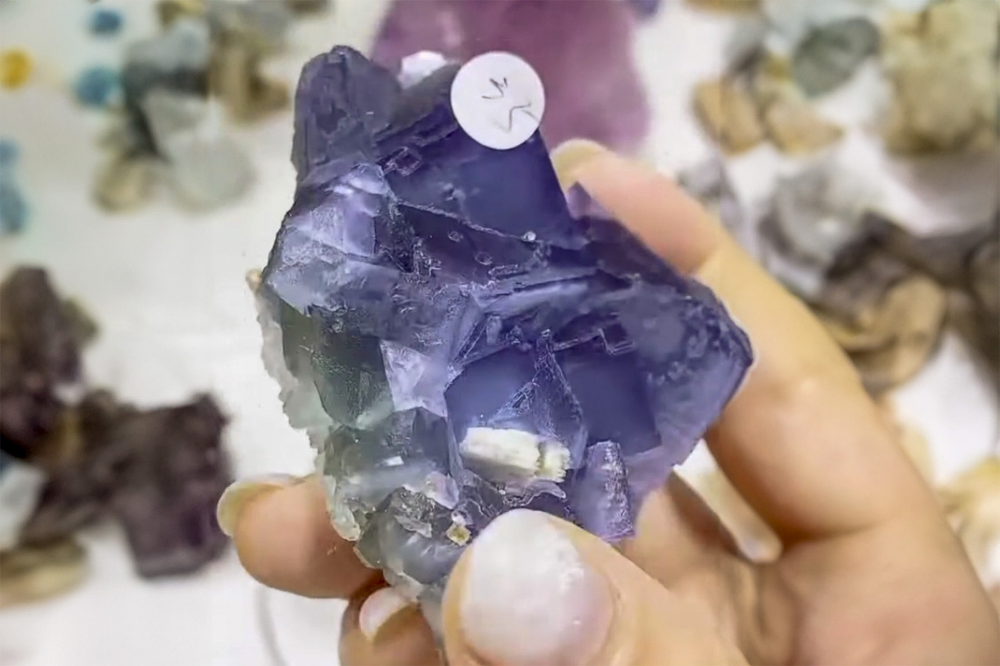

Fluorite with Minor Barite
"Blue Beijing Fluorite With a White Barite Blade"
III-08901
Huairou District, Beijing, China
Purchased 12/29/2025 from 7 Minerals Mine for $35.00
Core Collection • In Collection
Details
Storage Type: Flat
Storage Location: 000 Unassigned
Size class: Small Cabinet (0)
Dimensions: 6.1 × 5.8 × 3.9 cm
Mass: 185 g
Luster: Poor, Vitreous